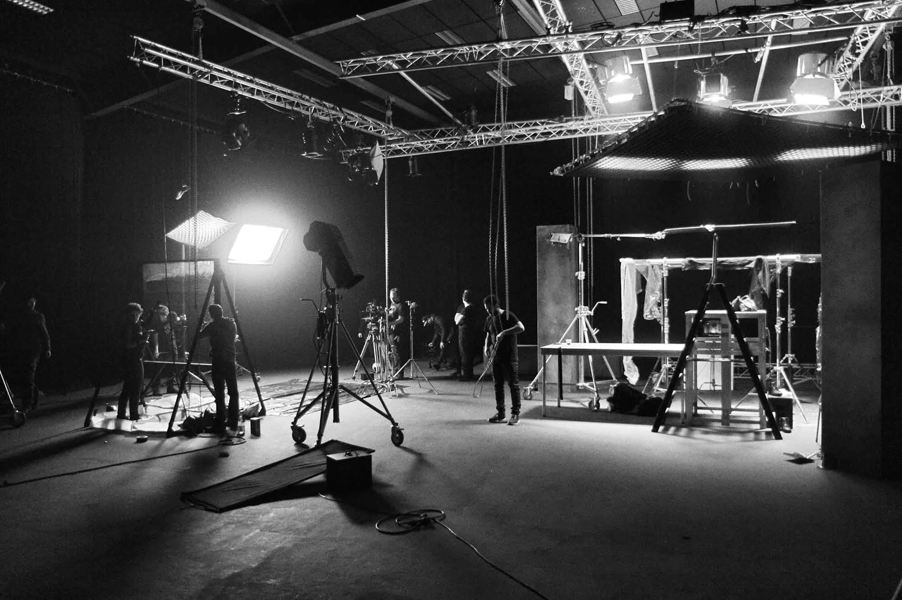
Aurora Motion is a Georgian-American production company that provides full production services — including pre-production, during and post-production — while also developing and producing its own film projects.
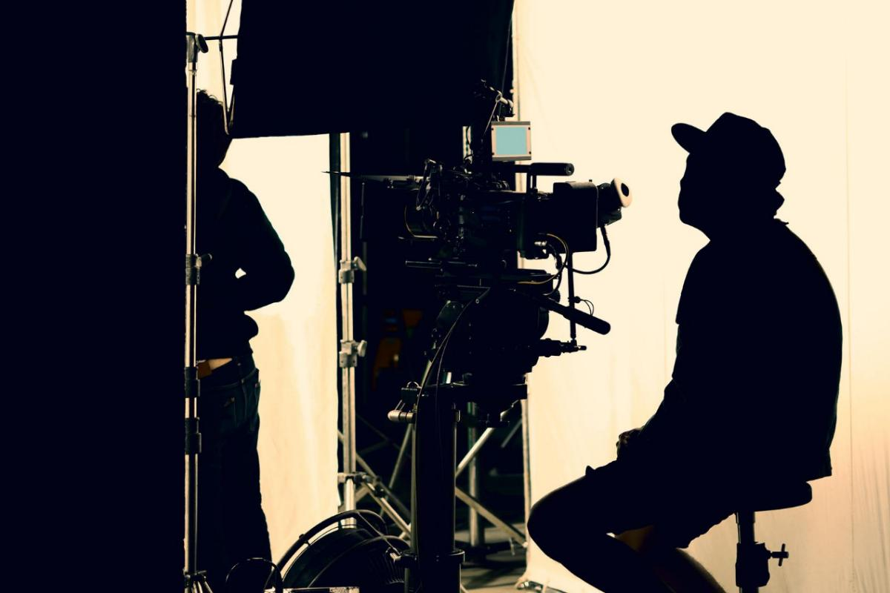
Aurora Motion is a well-established production company located in Tbilisi, Georgia. We cover a wide range of development, production and postproduction services for cinema, TV and commercials, including consultancy and management for film, television and other AV productions.
Recently, Aurora Motion has concentrated its efforts towards developing its own projects (feature films, short films, animation and new media).
Aurora Motion is able to work across all media platforms, providing a multitude of services to accommodate the production needs, from assembling the crew to location scouting, set construction and visual effects.
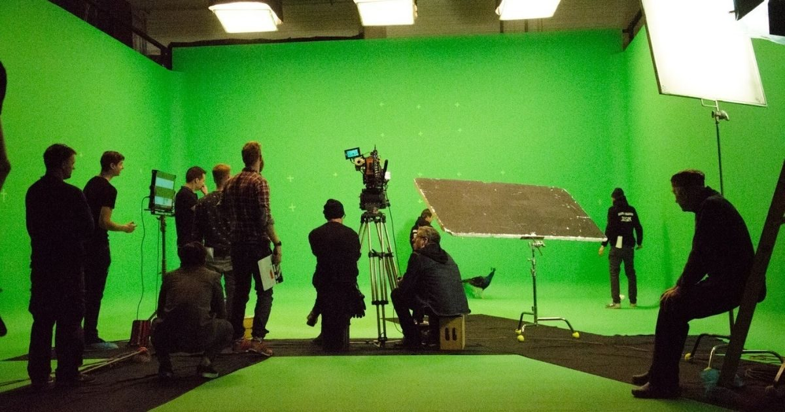
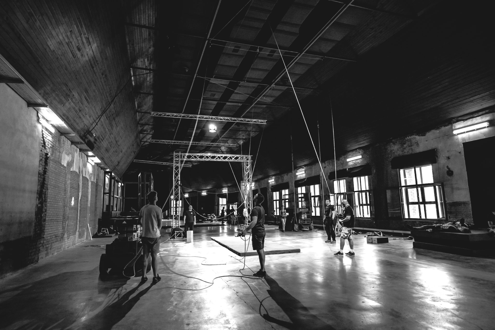
Aurora Motion provides high standard services by fully understanding the clients needs and expectations and providing the best solution for location, casting, sets in pre/during/post production.
Yan Fisher is an accomplished producer and executive with extensive international co-production experience and a strong track record of developing and delivering global content. With a career spanning major studios and award-winning productions, he brings deep industry relationships, strong creative judgment, and proven expertise in packaging, financing, and executing high-level projects.
He began his career in news and documentary filmmaking before transitioning into feature films, producing works such as The Perfect Witness, MGM’s Pathology, and the remake of Papillon.
Short Movie — Achan and Ezra
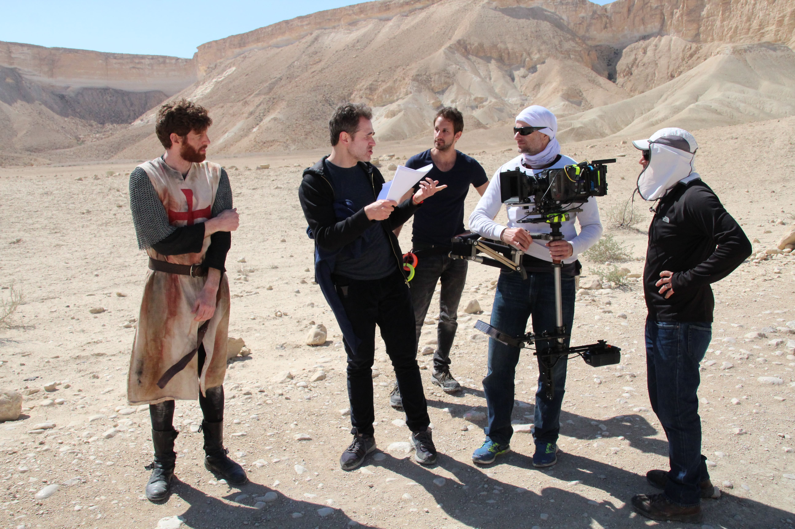
In 2010, he co-founded FISHCORB Films, based in Los Angeles and Barcelona, where he remained through the end of 2025. During his tenure, the company produced international projects including Ben-Hur, Seve, and Lies in Plain Sight, while also building a strong distribution footprint in the Spanish market.
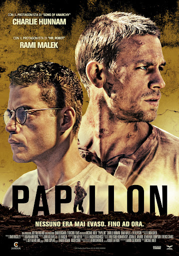
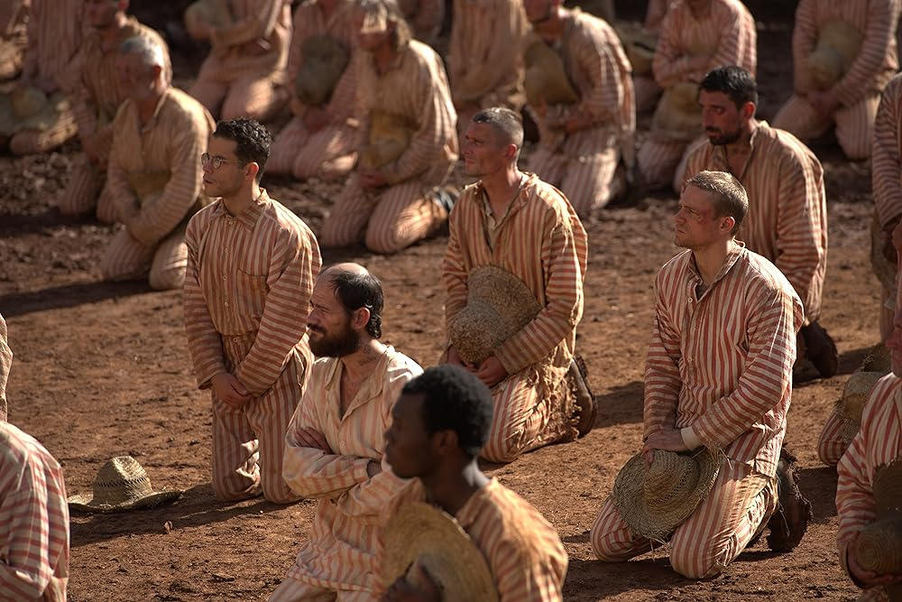
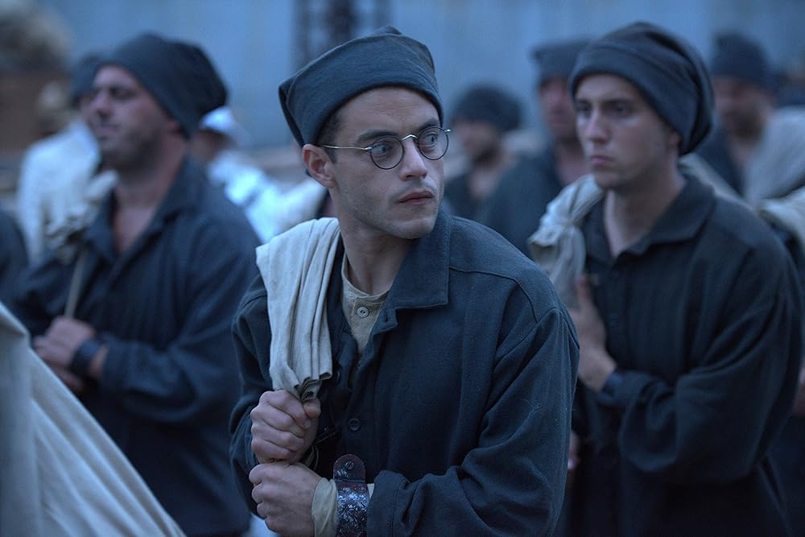
Yan's credits include Papillon (Toronto International Film Festival), Let It Snow (Lionsgate), and Waiting for Dalí, which premiered at the Málaga Film Festival.
His final project with FISHCORB was the sci-fi thriller AMI, starring Mads Mikkelsen and Diane Kruger, currently in post-production.
He also made his directorial debut with Achan and Ezra, winner of Best Comedy Short at the London Independent Film Awards, and produced the documentary Searching for Nika a feature documentary set against the backdrop of the war in Ukraine, which premiered at DOC NYC in 2024.
Following the completion of AMI, Yan launched Invisible String Films, marking a new chapter focused on elevated, internationally driven storytelling. As CEO, he oversees creative strategy, financing, and production, ensuring projects are positioned for strong global performance.
Producers Guild of America
European Film Academy
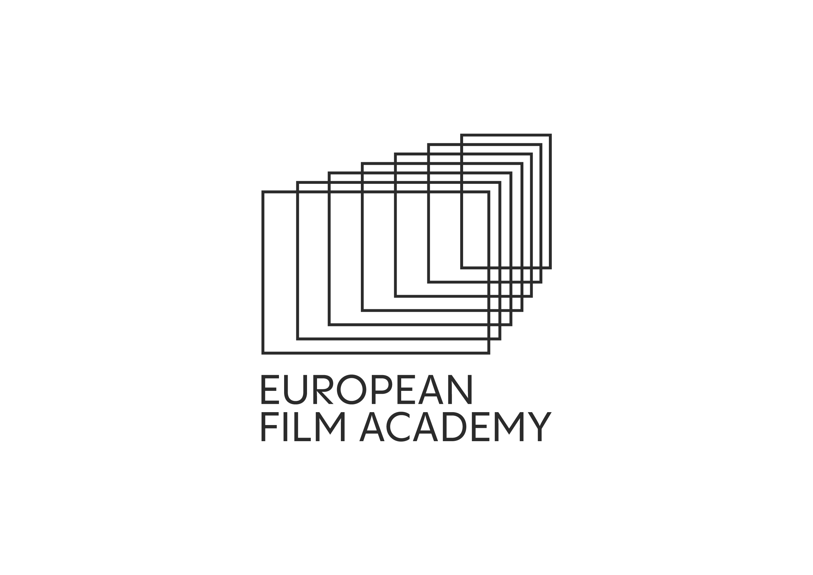
Business Consultant · Marketing Strategist · Entrepreneur
Linda Kikolashvili is a Georgian top-level manager, business consultant, and marketing strategist with a strong multidisciplinary background in law and marketing.
Core Areas of Expertise:
Business Consultant & Marketing Strategist Linda works with entrepreneurs, executives, and organizations, supporting them in business growth, brand positioning, strategic planning, and market entry. She has participated in consulting projects involving academic institutions and high-level professionals.
Linda Kikolashvili has led the attraction and execution of investment projects exceeding USD 100 million in total value, implemented across Georgia and international markets. Her portfolio includes cross-border partnerships, strategic project development, and large-scale investment integration across multiple industries.
Location
Georgia is located on the crossroads of Europe and Asia, surrounded by the Black Sea from the west, the great Caucasus Mountains from the north and semi-desert areas from the south. Being located on the junction of ecologically and culturally diverse places, Georgia offers climate zones ranging from subtropical to high alpine and semi-desert areas.
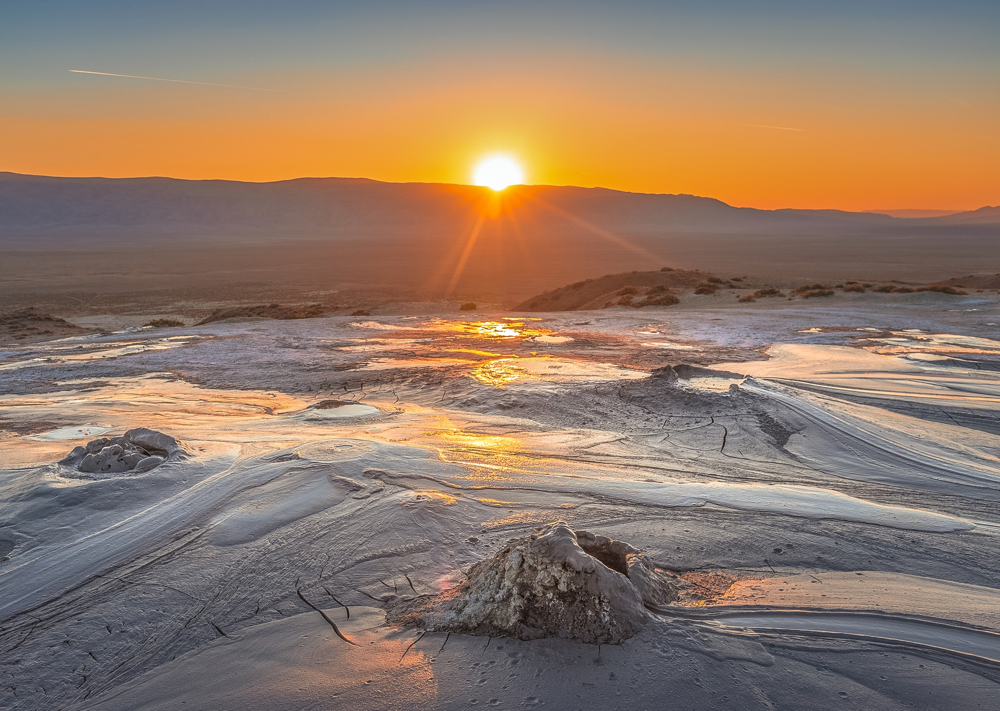
Georgia is home to a vibrant film industry which dates back to 1908. Since then, Georgian cinema has enjoyed great success and established its own unique identity.
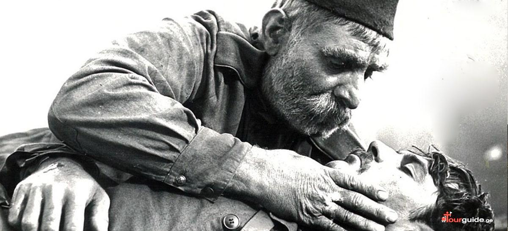
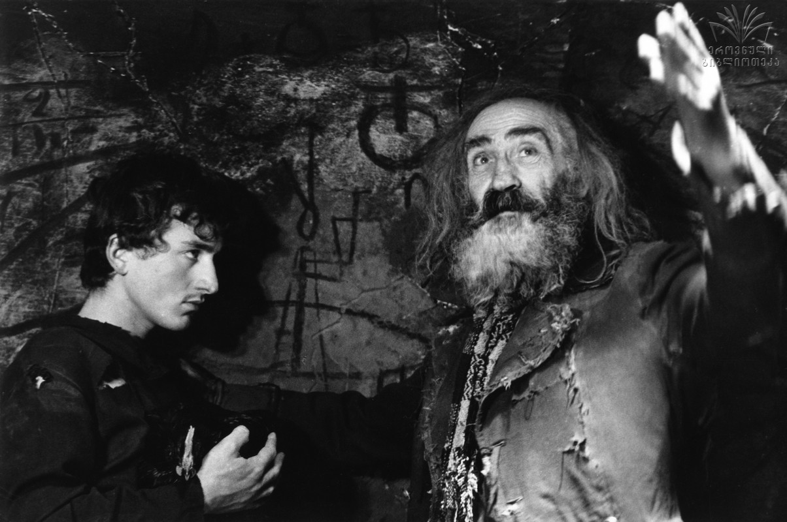
Georgia's filmmaking flourished during the Soviet years, when the country had the capacity of producing up to 70 films a year; back then, one of the local film studios, the Georgian Film Studio was among the biggest in the Soviet Union. The "Iron Curtain" prevented international exposure of many masterpieces, however, several films still managed to travel the world and received worldwide recognition and awards.
The Government of Georgia launched the "Film in Georgia" program in 2016. This film incentive program offers a 20% rebate for qualified spend in Georgia and an additional 5% rebate is available if the production promotes Georgia by meeting the program's so called "cultural test."
No shooting permits
Most of the state-owned properties like buildings, derelict factories, roads, parks etc. are free to shoot
State services are accessible with minimum cost and bureaucracy
Easy access to military equipment and services with minimum cost and bureaucracy
A small country (69,700 sqm) with well-developed road, railway and air infrastructure. Short distances from cities to mountains, the sea, forests, or desert locations